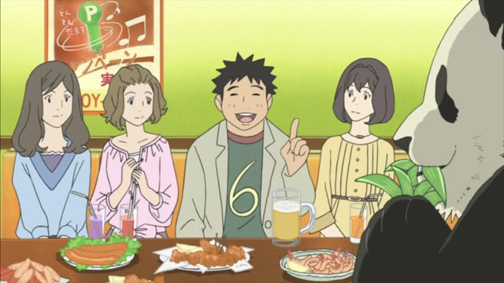

～ため(に)
Noun before it? Add の. な-adjective? Add な.
| Word | Add | Ending | ||
|---|---|---|---|---|
| Noun | 学生 | の | ため | For the students |
| な-adjective | 静か | な | ため | Because it's quiet |
| Verb | 行く | – | ため | In order to go |
| い-adjective | 高い | – | ため | Because it's expensive |
Samurai Champloo · Episode 9
健康のためにジョギングしてるんですが、何か？
"I'm jogging for my health. Got a problem?"
～ために means "in order to, for": it gives the goal of the action. After a noun, add の: 健康のために, "for my health". After a verb, nothing: 行くために, "in order to go".
On this card, a jogging samurai explains himself to Mugen. 健康のために is the goal, ジョギングしてる is what he does for it. んですが makes it polite.
ため can also mean "because of", mostly in news and announcements: 雨のため中止です, "cancelled because of rain".
Aggretsuko · Season 1, Episode 2
この年で老後のために貯金してるタイプ。
"The type who's already saving for retirement at this age."
On this card, Puko teases Retsuko about what kind of person she is. 老後のために: for old age.
Quick Examples
Your friend asks why you're learning Japanese.
日本で働くために勉強してるんだ。
"I'm studying to work in Japan."
After a verb: nothing added.
CasualA parent at a school meeting.
子どもたちのために頑張ります。
"I'll do my best for the children."
After a noun: の.
PoliteA train announcement.
事故のため、電車が遅れています。
"Because of an accident, the trains are delayed."
ため = because of. Formal.
PoliteYou're saving every yen.
車を買うためにお金をためてる。
"I'm saving up to buy a car."
CasualWith and without
ジョギングしてる。
"I'm jogging."
健康のためにジョギングしてる。
"I'm jogging for my health." Now you know the goal.
Examples from Media

Shirokuma Cafe · Episode 10
だから量で補うために１日中竹を食べているんです。
"So they eat bamboo all day to make up for it with quantity."
Pandas get little from bamboo, so they eat a lot.
Quartet · Episode 2
その人のために演奏がしたいです。
"I want to play for her."
The person he loves is getting married.
Death Note · Episode 33
キラをおびき寄せるためです。
"It's to lure Kira out."
ためです at the end: "it's in order to".
Slam Dunk · Episode 25
暑さ対策のため、閉めきって練習してます。
"We're practicing with the doors shut to deal with the heat."
Training for a hot gym.
Oishinbo · Episode 26
これもみんな親友のみよ子のためです！
"I'm doing all this for my best friend Miyoko!"
Kekkon Dekinai Otoko · Episode 3
みんなで楽しくお食事するために来たのよ。
"I came to have a nice dinner with everyone."
Vinland Saga · Episode 2
加勢を頼むため、この地へ参った。
"I came to this land to ask for your help."
ため without に: more formal.
Sakamoto Days · Episode 10
なら、私も店長のために一肌脱ぐヨ！
"Then I'll do my part for the boss too!"
一肌脱ぐ = to pitch in for someone.